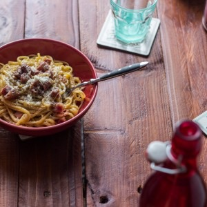
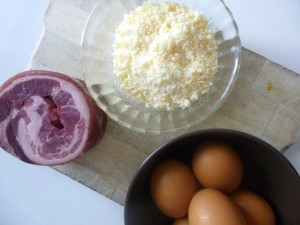
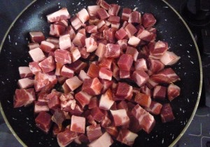
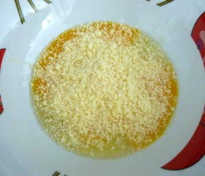
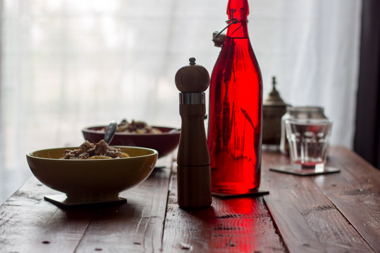

Pâtes à la Carbonara

Les pâtes à la Carbonara: certains penseront crème, lardons, gruyère râpé, mais il n’en est rien.
Je vais ici vous parler de la recette traditionnelle des pâtes à la carbonara et je ne comprends pas comment cette recette a pu autant dériver dans nos cuisines.
La « vraie » carbo c’est seulement des pâtes (de préférence longues type spaghettis , tagliatelles , linguines etc.. et fraîches pour ceux qui en ont le courage) , des œufs , du guanciale ( très difficile à trouver en France) ou de la pancetta , du pecorino (remplaçable par du parmesan) et du poivre noir!
Pour faire vos pâtes vous même la recette est ici
C’est parti pour une recette simplissime et délicieuse de pâtes à la carbonara !
Ingrédients
- pâtes - 400 gr
- eau de cuisson des pâtes - 5 cl
- jaunes d'oeuf - 4
- oeuf - 1
- pecorino - 100 gr
- pancetta - 320 gr
- poivre noir
Instructions
- Râper le pecorino
- Dans un faitout porter à ébullition une grande quantité d'eau salée.
- Couper la pancetta en morceaux. Ne couper pas des morceaux trop fins, il faut que cela ressemble à des petits cubes et donc avec un peu d'épaisseurs
- Faire revenir la pancetta sans ajouter de matière grasse
- Quand la pancetta est cuite retirer l’excès de gras et réserver
- Dans une jatte verser les œufs et la moitié du pecorino râpé , bien mélanger.
- Faire cuire les pâtes dans le faitout (de préférence al dente)
- Égoutter les pâtes en gardant 5 cl de l'eau de cuisson
- Mélanger les pâtes à la pancetta puis incorporer les œufs battus
- Bien remuer et si nécessaire ajouter un peu d'eau de cuisson




Les tips de la communauté
Recette très appréciée et considérée comme authentique. Les retours sont enthousiaste avec des commentaires élogieux sur le goût et la différence par rapport à d'autres versions.